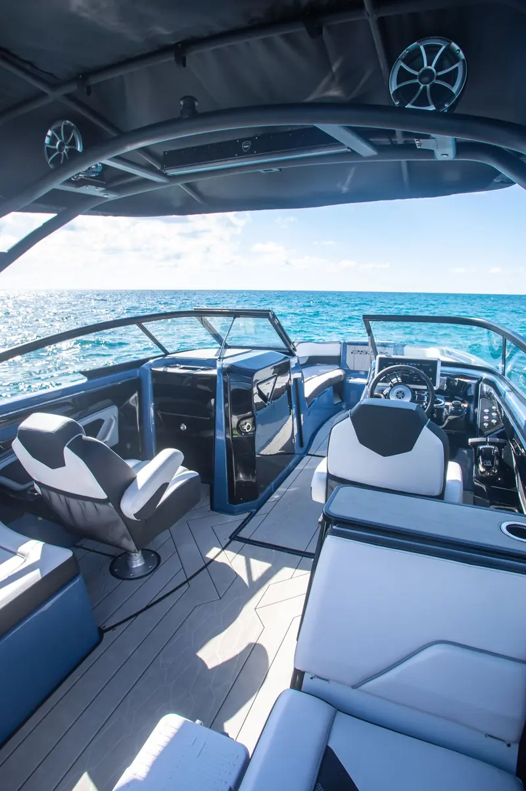

Miami Sandbar Guide: Nixon's Sandbar, Haulover and Stiltsville
Miami's best beach is not on the map. It is waist-deep water in the middle of Biscayne Bay, and the only way there is by boat.

What a sandbar is, and why Miami lives on them
A sandbar is a shallow rise in the bay floor where the water is knee-deep to waist-deep over clean sand. Boats anchor along the edge, everyone gets in, and the afternoon takes care of itself. There are no roads, no parking and no beach crowds, because you can only arrive by boat.
Biscayne Bay has three spots that come up on almost every charter request. They are not interchangeable.
Nixon's Sandbar
Where: the bay side of Key Biscayne, south of downtown Miami.
Nixon's takes its name from President Richard Nixon, whose winter White House stood on the shore of Key Biscayne nearby. The water is clear, the bottom is sand, and the skyline sits on the horizon to the north. Weekends bring a floating party; weekdays are calm enough to hear your own music.
It is the closest sandbar to our dock on the Miami River, which is why it is the stop on most of our charters.
Stiltsville
Where: the shallow flats about a mile south of Cape Florida, at the southern tip of Key Biscayne.
Stiltsville is a group of wooden houses standing on pilings over open water. The first shack went up in the 1930s, and by 1960 there were 27 buildings out on the flats, including social clubs you could only reach by boat. Hurricanes took most of them. Seven were still standing after Hurricane Andrew in 1992, and the site is now part of Biscayne National Park.
You see the houses from the water rather than going inside them. Pair it with a swim stop at Nixon's and you have the full south-bay day. It is farther out, so plan a longer charter if you want both.
Haulover Sandbar
Where: the north end of Biscayne Bay, just inside Haulover Inlet beside Haulover Park.
Haulover is the big north-bay gathering spot, popular with boats coming from Sunny Isles, Aventura and North Miami. The sand is at its best around low tide. It sits at the opposite end of the bay from Nixon's and Stiltsville, so choose one end of the bay for your day rather than trying to do both.
The three compared
| Spot | Part of the bay | Known for |
|---|---|---|
| Nixon's Sandbar | South, off Key Biscayne | Clear water, skyline view, weekend party |
| Stiltsville | South, past Cape Florida | Historic stilt houses in a national park |
| Haulover Sandbar | North, by Haulover Inlet | Low-tide sandbar, north-bay crowd |
When to go
- Tide: lower water means more sand to stand on. Your captain times the stop around it.
- Day: Saturdays and Sundays are a scene. Monday to Thursday you may share the sandbar with a handful of boats.
- Season: the water is warm enough to swim all year. See the best time for a yacht charter in Miami for the month-by-month picture.
Getting there
You need a boat, and unless you hold a Florida boating safety card, you need someone to drive it. (The rules are in our guide to boating licenses in Miami.) A private sandbar charter covers both: the boat, a licensed captain and crew, from $1,000 for 4 hours.
Frequently asked questions
Where is Nixon's Sandbar in Miami?
On the bay side of Key Biscayne, south of downtown Miami. It is named after President Richard Nixon, whose winter White House stood on the Key Biscayne shore nearby. It can only be reached by boat.
What is Stiltsville?
A group of wooden houses built on pilings over the shallow flats about a mile south of Cape Florida. The first was built in the 1930s, there were 27 by 1960, and the site is now part of Biscayne National Park.
Where is Haulover Sandbar?
At the north end of Biscayne Bay, just inside Haulover Inlet beside Haulover Park. It is best around low tide.
Can you get to a Miami sandbar without a boat?
No. Miami's sandbars sit in open water in Biscayne Bay and are reached by boat only.
Pick your sandbar day
Tell us the date and we will match the boat. Captain and crew included, from $1,000 for 4 hours.